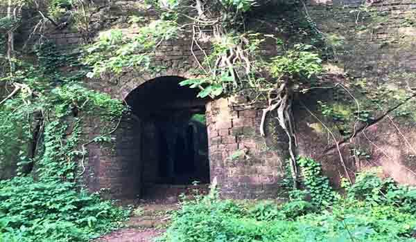
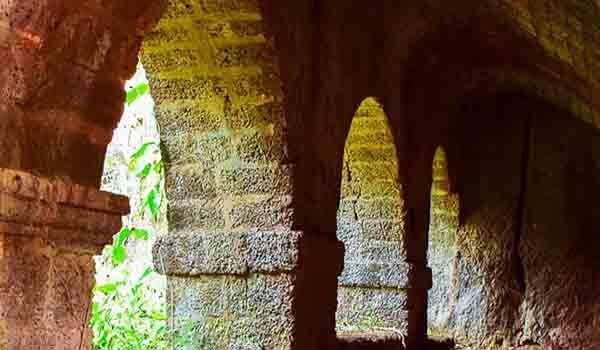

Yashwantgad Fort is located in Redi, over a small hill on the Maharashtra- Goa border, this magnificent tree entangled fort sits north of the Jaitapur Creek and overlooks some of the most beautiful beaches of the south Maharashtra coast. The Yashwantgad Fort is the perfect example of how Mother Nature can take over anything that is man made.
Roots of the trees have slowly made their way onto the walls inside the fort which have resulted in the roofless citadels. Langurs and drongo birds are present in plenty and make for a true treat to the eyes.
Originally, Yashwantgad fort was built by the great rulers of the Maratha in the early sixteenth century. Yashwantgad fort was then of a great prominence to Marathas due to its tactical and strategic positioning which also served as a major trading point.
Famous temples such as the Swayambhu Shiv Temple, the Ganesha Temple, the Mauli Temple, the Rampurush Temple and the Navadurga Temple, where Goddess Durga is worshipped are some of the religious places to visit. The Shiroda, Aravali and the Terekhol Fort are some of the historic constructions that you might want to visit. Paradise beach is located at a strolling distance from Yashwantgad Fort.